Never-before-heard stories from inside residence halls. Discover what it really looks like to live where you work, study, and get called at 3 a.m.
By Maya Godwin, May 2026
On the outside, the life of a Residential Advisor can look ideal: free housing and food, leadership experience, a single room, and close proximity to classes. In a coastal college town where rent is high, the position has become one of the most wanted jobs at Cal Poly.
But once you’re on call, the job becomes something very different.
At Cal Poly, one of the campus’s most competitive student jobs also comes with some of its most important demands.
While students often see the benefits first, many RAs say the emotional and mental strain of the role is what ultimately defines the experience.
Still, much of the job happens in quieter moments. Residential advisors are expected to build relationships, organize events and create community inside residence halls that can otherwise feel isolating or chaotic. The photos below capture the side of the role most students recognize first: the visible, social and community-centered part of being an RA.
RA Events
RA events create community through the chaos of dorm life.
Lauren Giovanonni, a second-year biomedical engineering major and resident advisor for Yosemite Tower 2, talks with residents during an ‘Early Earth Day’ event she organized on April 16, 2026. On the right, students argue about the rules of the game, accusing each other of cheating and laughing as they try to settle it.
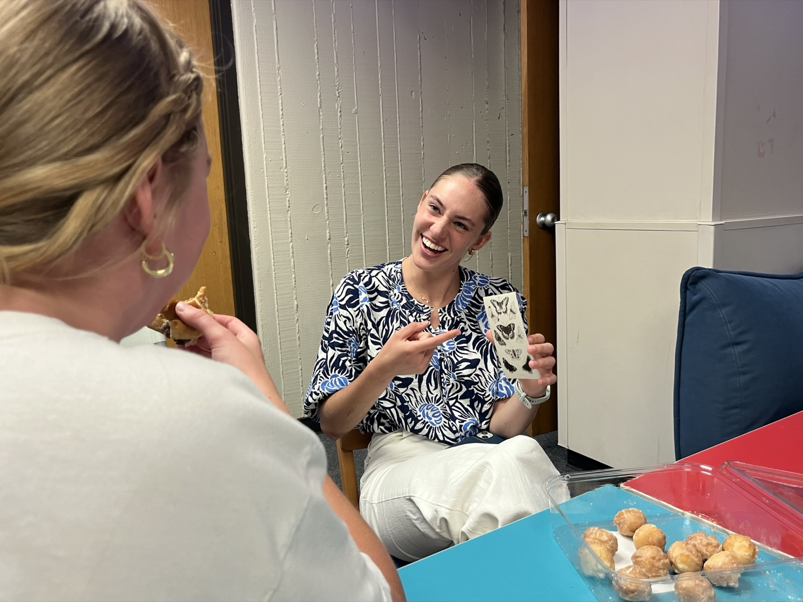
Fallon Boyle, a first-year agricultural communications major, laughs with her neighbor Fiona Gordon, a first-year food science major, during an ‘Early Earth Day’ event hosted by RA Lauren Giovanonni. Boyle holds up a sheet of nature-themed stickers, turning a treat into a sweet moment of connection between neighbors.
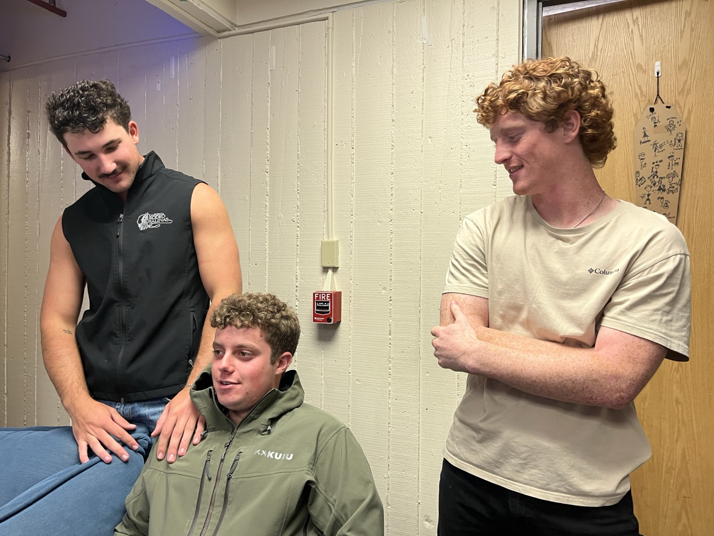
Jackson Scott and Jack Lindley, both first-year agricultural systems management majors, stand with Brock Muniozguren, a first-year forest and fire science major, in the lounge. The three laugh about a roommate laundry disaster from earlier in the week, chatting about who broke one of the communal washing machines.
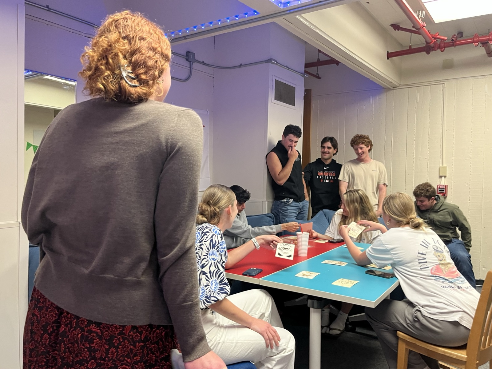
“I wanted to do something before Earth Day because I’m actually on call that night, and a lot of my residents are busy too,” said 'Early Earth Day' organizer Lauren Giovanonni. “This way people could still come, hang out and do something together without stressing about their schedules.”
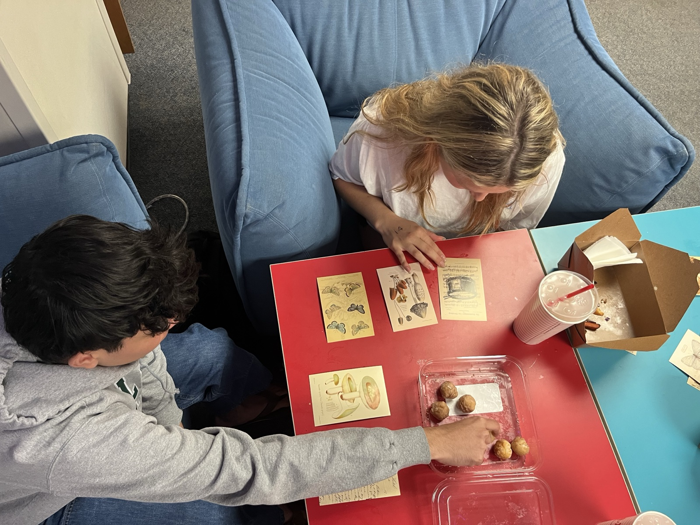
Reese Worsdell, a first-year animal science major, and Rob Bautista, a first-year business major, flip through nature-themed cards while talking about a possible trip to Palm Springs. Residential events like this one provide students with opportunities to converse outside of class.
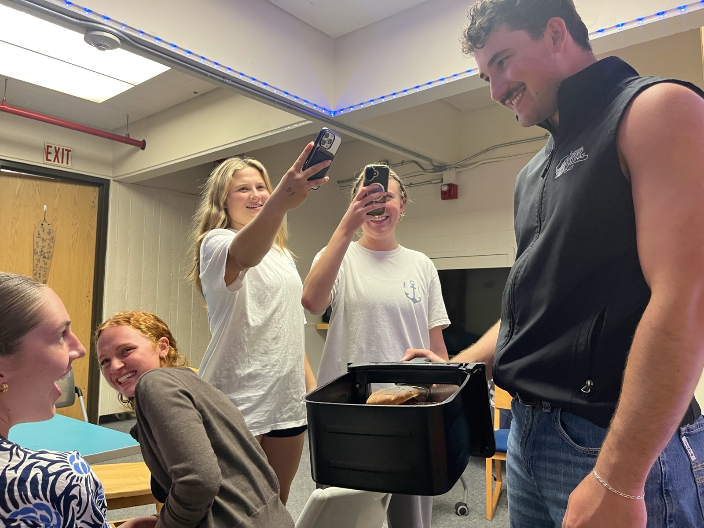
During the event, Jackson Scott brings out the air fryer with a Chick-fil-A sandwich still inside, burnt enough to shrink the plate underneath. Fallon Boyle and Lauren Giovanonni laugh while Reese Worsdell, a first-year animal science major, and Fiona Gordon take photos. “I love this,” Giovanonni said. “It’s so dumb, but this is exactly what living here is like. Everyone just kind of joins in.”
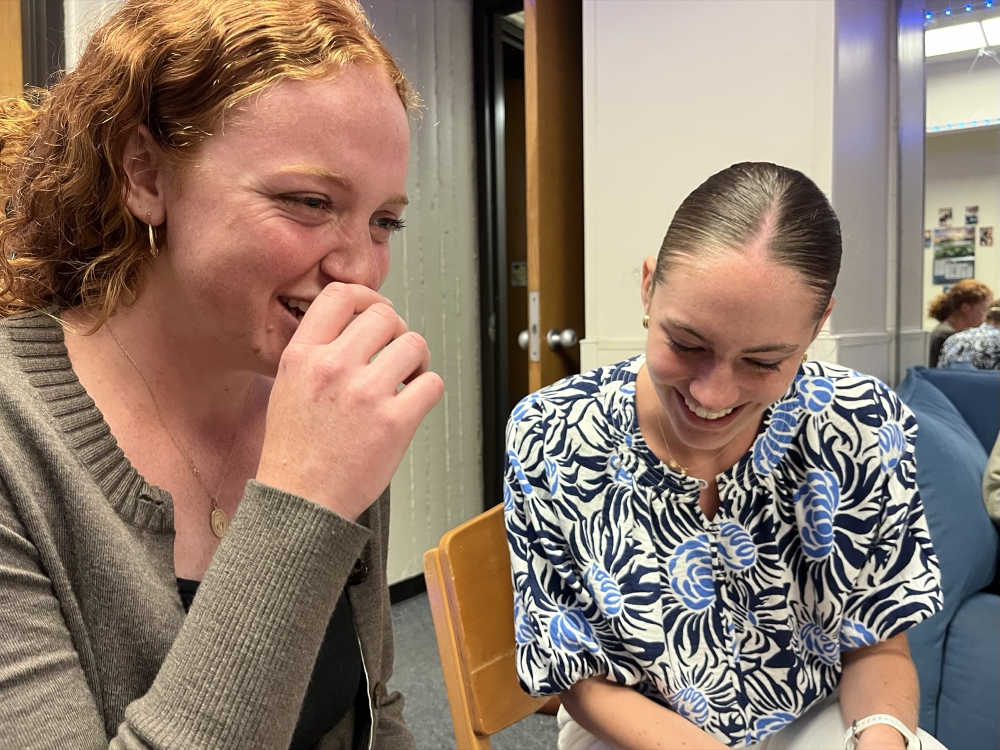
Lauren Giovanonni, resident advisor for Yosemite Tower 2, laughs with Fallon Boyle over an inside joke the two share, breaking into laughter as Fallon tries to explain it before giving up. The initial confusion from others nearby only makes it funnier, sparking more laughter around the room.
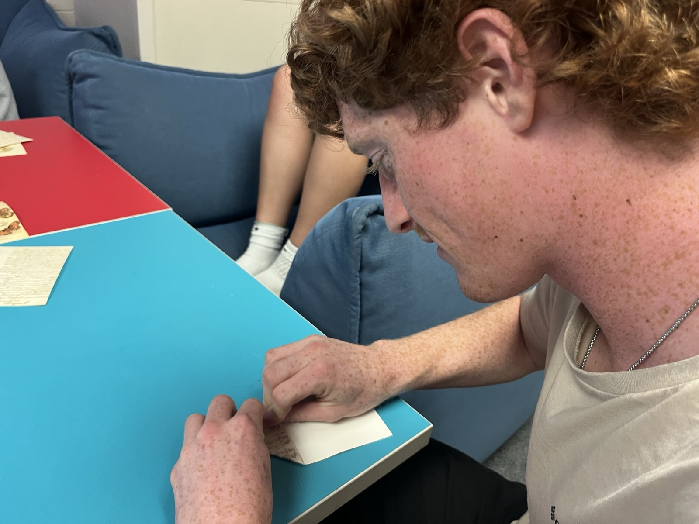
Brock Muniozguren, a first-year forest and fire science major, folds a piece of paper provided at the ‘Early Earth Day’ event after getting back from class. “I had class until 8, so I was pretty done for the day,” Muniozguren said. “It was nice to come back and have something going on instead of just going straight to my room.”
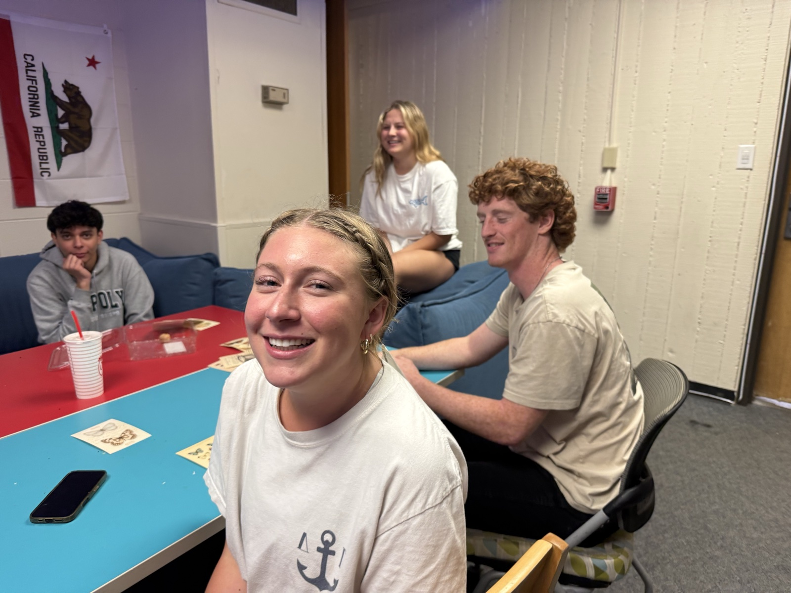
First year food science major Fiona Gordon glances toward the camera while sitting with her neighbors during the 'Early Earth Day' event. The group stays at the table after their game ends, continuing their conversation after the April 16 event technically ends.
1 / 9
The event photos show the side of the job people tend to notice first. From the outside, it can look like most of being a residential advisor is just showing up and creating community.
But that is only one half of it.
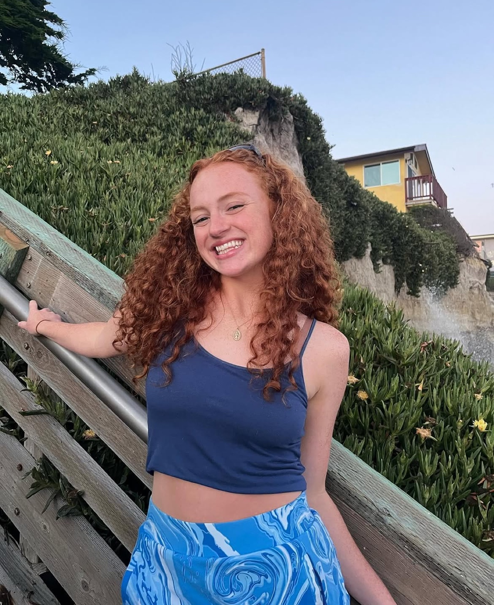
“I feel like I got really lucky with my residents this year, and that doesn’t always happen,” said Lauren Giovannoni. “Being an RA is tough sometimes, but for the most part, it’s been fun and rewarding.”
The same role also comes with responsibility that does not stay inside scheduled events or planned hours. RAs are expected to step in when things go wrong, handle policy issues, and respond when something in the building shifts from normal to not normal, even if it is the middle of the night.
That's where things start to get complicated. As an RA, you are someone’s neighbor, but you are also the person they get written up by.
Confessions
These anonymous first-year confessionals tell the stories of the things students got away with in the dorms without their RAs finding out. From chaotic pranks to drunken decisions, the clips capture the side of dorm life that usually stays behind closed doors.
Anonymous Prankster
Anonymous Drinker
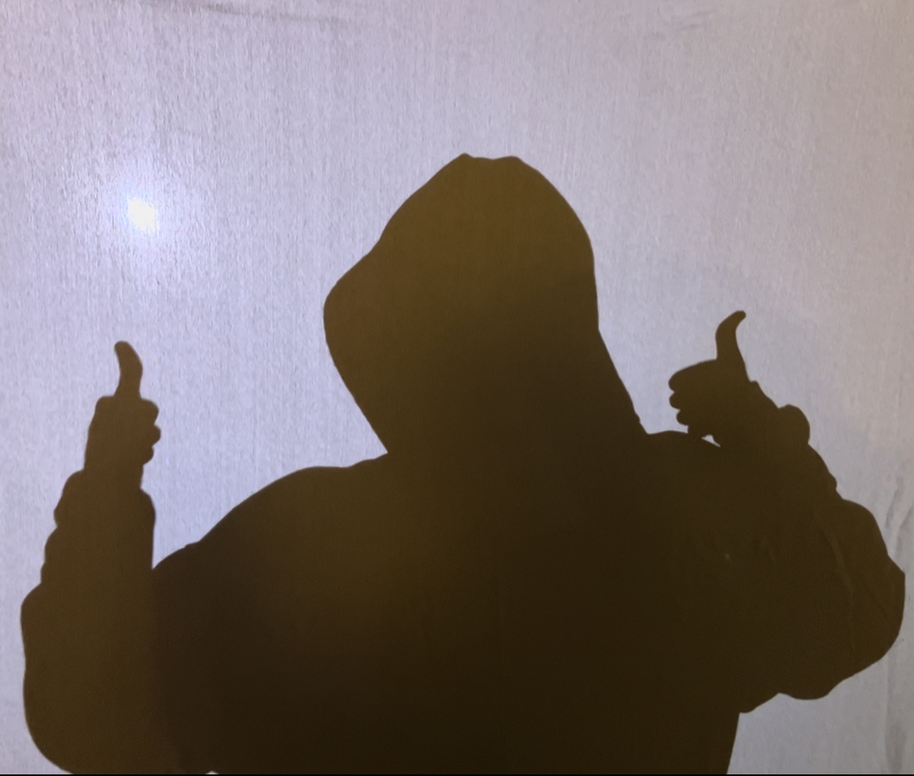
Anonymous Sunbather
Click an image to play | Double-click to pause
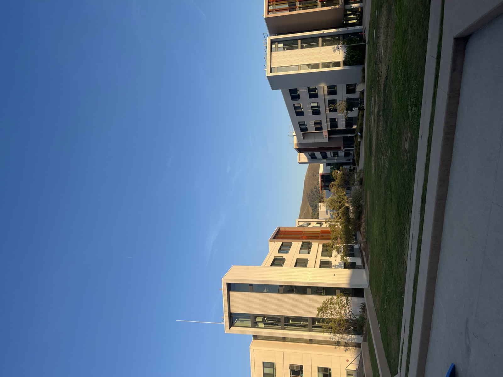
The yakʔitʸutʸu residential community is one of many dorm communities on campus where RAs work and live among their residents.
Timeline
The path to becoming a Cal Poly residential advisor begins months before students move into their assigned communities.
1
Eligibility
Must have a minimum 2.3 GPA and good disciplinary standing.
2
Applying
Complete the online RA application and answer three written response questions in 350 words or less.
3
Interview Process
Based on the written application, candidates are called back for two 30-minute interviews in January.
4
Selection & Offer
In mid-February, applicants are notified of their selection.
5
Training
If selected, students are assigned mandatory RA training before the Fall Semester.
6
Move Into Housing
RAs move into their assigned dormitory right before WOW Week.
7
Begin Your Duties
RAs begin planning future events, nightly safety checks and building community.
Source: Cal Poly Housing
Insight
This interview features a former Cal Poly RA reflecting on the pressure and responsibility that came with the role, along with the feeling that the work often went unrecognized. His perspective adds to the story by showing the emotional toll and unseen challenges that residential advisors face.
Former residential advisor Fulton Skikos reveals his experience as an RA.